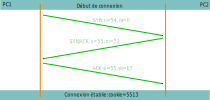
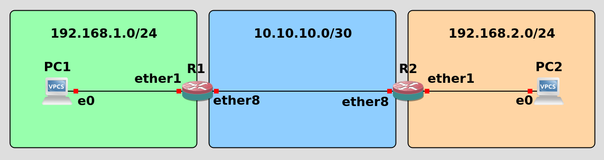
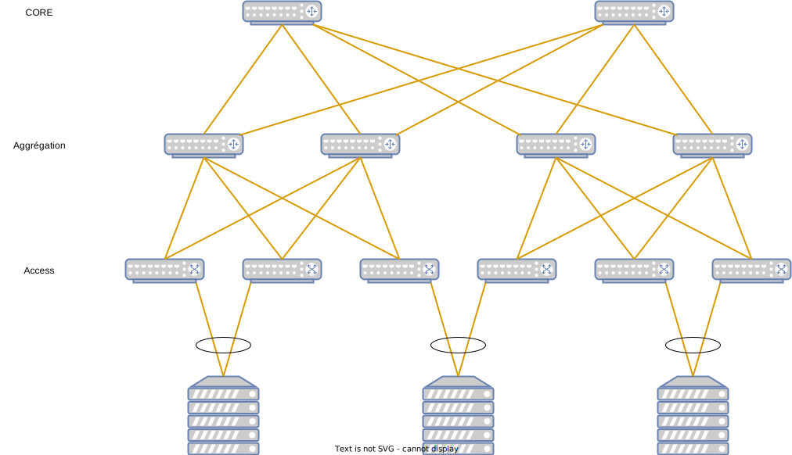
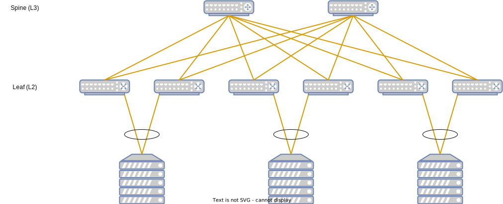
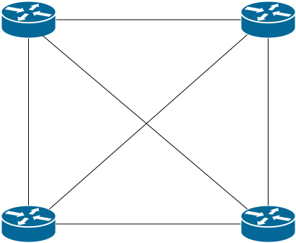
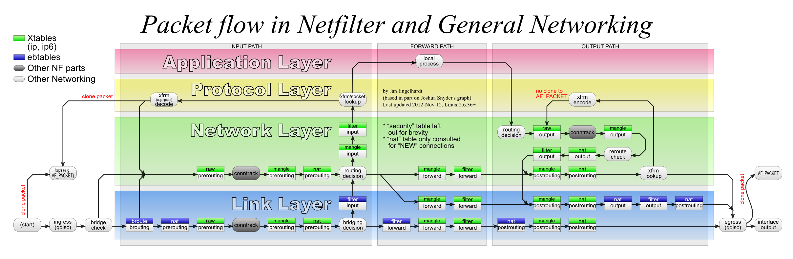
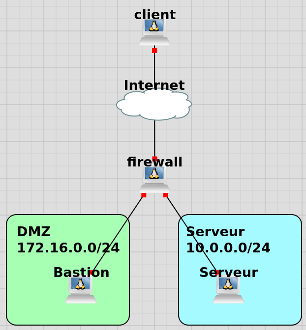
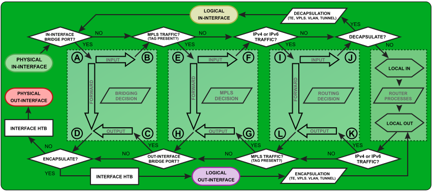

Réseau(x)
Renaud Goll @ TekaTux
Document sous licence

TekaTux
L'informatique éthique
- Hébergements écologiques
- Architecture système et réseau
- Expertise systèmes libres (unix/linux)
- Cybersécurité
- RGPD
- Formations
Pourquoi ?
Les applications d'aujourd'hui sont massivements distribuées. Le moindre problème réseau peut amener des disfonctionnements majeurs. Un des buts de ce cours est de vous donner les recettes qui pourront vous permettre de prévoir des solutions de secours.
Une autre raison est de vous donner la Réponse à la Question: au fait, pourquoi ça marche ?
Un autre but est de vous faire comprendre que nous sommes passé de l'air des grosses applications à celle des microservices, même si ces microservice ont été inventé en 1970... avec unix et le principe KISS.
Aucun de vos codes ne servirait s'il n'était soutenu par une infra.
Bref, vous êtes là car votre code sera meilleurs avec ce cours que sans... enfin, j'espère !
Les réseaux les plus vieux
Le réseau social : le clan (~150 000 ans)
Le réseau d'irrigation (~5 000 ans Av JC)
Le réseau commercial (la route de la soie : 139 av JC)
Les réseaux modernes
- Le réseau routier
- Le réseau férroviaire
- Le réseau sanitaire
- Le réseau d'eau potable
- Le réseau électrique
- Le réseau fluviale, maritime ou aérien
- Le réseau d'entreprise
- Le réseau téléphonique
- Le réseau internet
- Les réseaux sociaux
- ...
Mais aussi
Les bases du réseau - histoire
Histoire
- 1792: les frères Chappe inventent le télégraphe optique (il en reste un bout au château du Haut-Barr)
- 1836 - 1838: les anglais Edward Davy, William Looke et Charles Wheastone mettent au point le télégraphe
- 1844: Samuel Morse met au point... le morse
- 1876: l'américain Graham Bell invente le téléphone
- 1958: BELL (l'entreprise) invente le premier modem (capable de transmettre des données binaires sur une ligne analogique)
- 1969: naissance d'ARPANET. Premier réseau à commutation de paquet
- 1972: première application majeure pour ARPANET: un logiciel de mail
- 1973: Bob Metcalfe met au point l'interface ethernet
- 1976: ARPANET migre vers IP. 111 ordinateurs sont connectés
La naissance d'Internet
- 1980: Vinton Cerf propose une inter-connexion des réseau CSNET et ARPANET en utilisant TCP/IP. C'est le début d'internet
- 1981: nombre de machine sur internet: 213
- 1982: nombre de machine sur internet: 235
- 1983: nombre de machine sur internet: 562
- 1984: nombre de machine sur internet: 1024
- 1985: nombre de machine sur internet: 1961
- 1986: nombre de machine sur internet: 5089
Le modèle OSI
Les septs couches du modèle
| PDU | Couche | Fonction | ||
| Couches Hautes | Données | 7 - Applications | Point d'accès aux services réseaux | |
| Couches Hautes | Données | 6 - Présentation | Gère le chiffrement et le déchiffrement des données | |
| Couches Hautes | Données | 5 - Session | Communication interhost, gère les session entres les différentes applications | |
| Couches Hautes | Segment | 4 - Transport | Connection de bout en bout, connectabilité et contrôle de flux | |
| Couches Basses | Paquet | 3 - Réseau | Détermine le parcours des données - adressage logique | |
| Couches Basses | Trame | 2 - Liaison | Adressage physique | |
| Couches Basses | Bit | 1 - Physique | Transmission des signaux sous forme numérique ou analogique |
Les septs couches du modèles - exemples
| Couche | protocoles |
| 7 - Applications | HTTP - IMAP - DNS - FTP - SSH - Telnet |
| 6 - Présentation | HTML - XML - AFP - CSS |
| 5 - Session | Appletalk - NetBios |
| 4 - Transport | TCP - UDP |
| 3 - Réseau | IP - Ipv4 - Ipv6 - ICMP - IGMP |
| 2 - Liaison | ATM - MPLS - Ethernet - ARP - PPP - PPPoE |
| 1 - Physique | 1000Base-T - 100Base-T - RS232 - RNIS - Wi-Fi - Thunderbolt - USB |
Spécifications - IEEE - IETF
Institute of Electronical and Electrics Engineers
et Internet Engineering Task Force
IETF
L'IETF est un organisme sans forme juridique. Il n'y a pas de membre, pas d'adhésion, pas de statut
Il s'agit donc d'un groupe de personnes totalement informel
Sa méthode de communication repose sur les RFC. Ils décrivent et promeuvent les standards internet, en particulier tcp/ip
La structuration des groupes de travail se fait par l'intermédiaire de chartes. Un président est nommé (ou plusieurs co-présidents) pour chaque groupe de travail. Le but est une RFC sur un sujet fixé (temps réel, sécurité, smtp...). La participation est libre. L'adoption d'une RFC se fait à "un consensus approximatif"
IETF
Il existe un très grand nombre de RFCs.
- Elles décrivent la plupart des protocoles sur internet
- RFC 894 : ethernet II
- RFC 791 : IP
- RFC 821, 2821, 5321 : SMTP
- RFC 2616, 7231 : HTTP 1.1
- ...
IEEE
C'est un organisme de standardisation
- Cet institut apolitique a une présence mondiale, notament:
- aux USA : 5 centres dont la directions générale
- En Asie : 3 centres Beijing et Shenzhen (Chine) et Bangalore (Inde)
- Dans le Pacifique : Singapour et Tokyo
- Russie : Moscou
- Europe : Vienne
IEEE
Actuellement, l'IEEE gère près de 1200 standards
La base de données d'articles techniques sur laquelle s'appuie ces standards contient près de 5 millions d'articles
- En ce qui nous concerne, l'IEEE a standardisé les couches 1 et 2 du modèles OSI avec les standards IEEE 802
- 802 : standard général de base pour le déploiement de réseaux numériques locaux ou métropolitains à liaison filaire ou sans fil.
- 802.1 : gestion des réseaux
- 802.2 : description générale de la sous-couche Logical Link Control
- 802.3 : spécifications pour l'implémentation de réseaux numériques locaux à liaison filaire
- 802.10 : sécurisation des échanges pour les systèmes à liaison filaire ou sans fil (Token Ring, Ethernet, Wi-Fi, WiMAX)
Ethernet
Couche 2
Trame ethernet
La structure de la trame ethernet II, RFC 894
+------------------+-------------------------------------------------+
| Bit sequence | Frame Ethernet |
| 101010101010... | 64 à 1518 octets |
+------------------+----------+---------+------+--------------+------+
| Preambule | SFD | Dest Adr | Src Adr | type | Data | FCS |
| 8 o. | 6 o. | 6 o. | 2 o. | 46 à 1500 o. | 4 o. |
+----------------- +----------+---------+------+--------------+------+
SFD = Start Frame Delimiter
type = information de contrôle
FCS = Frame Check Sequence
Le préambule sert à la détection du début de trame par les interfaces
- Nous avons notament
- Type: contient des informations de contrôle
- FCS: C'est un code permettant de détecter les erreurs de transmission. Dans la trame ethernet, il s'agit d'un code CRC
Notez que le FCS protège des modifications mineures de trame. Il ne protège en rien des modifications volontaires et ne peut donc pas être utilisé pour sécuriser la trame
Trame ethernet
La structure de la trame ethernet, IEEE 802.3
+------------------+----------------------------------------------------------------------+
| Bit sequence | Frame Ethernet |
| 101010101010... | 64 à 1518 octets |
+------------------+----------+---------+------+------+------+------+--------------+------+
| Preambule | SFD | Dest Adr | Src Adr | Long | DSAP | SSAP | Ctrl | Data | FCS |
| 8 o. | 6 o. | 6 o. | 2 o. | 1 o. | 1 o. | 1 o. | 43 à 1497 o. | 4 o. |
+----------------- +----------+---------+------+------+------+------+--------------+------+
SFD = Start Frame Delimiter
DSAP = Destination Service Access Point
SSAP = Source Service Access Point
FCS = Frame Check Sequence
Le préambule sert à la détection du début de trame par les interfaces
- Nous avons notament
- DSAP: un code permettant d'identifier le protocole transporté: notament 06 pour TCP/IP ou F0 pour netbios
- SSAP: code permettant d'identifiant le protocole emetteur: notament 7F pour IEEE 802.2 ou Logical Link Control
Détection de trames
Alors, trame IETF ou IEEE, RFC 894 ou 802.3 ?
+------------------+----------------------------------------------------------------------+
| Bit sequence | Frame Ethernet |
| 101010101010... | 64 à 1518 octets |
+------------------+----------+---------+------+-----------------------------------+------+
trame | Preambule | SFD | Dest Adr | Src Adr | type | Data | FCS |
RFC 894 | 8 o. | 6 o. | 6 o. | 2 o. | 46 à 1500 o. | 4 o. |
+------------------+----------+---------+------+------+------+------+--------------+------+
trame | Preambule | SFD | Dest Adr | Src Adr | Long | DSAP | SSAP | Ctrl | Data | FCS |
802.3 | 8 o. | 6 o. | 6 o. | 2 o. | 1 o. | 1 o. | 1 o. | 43 à 1497 o. | 4 o. |
+----------------- +----------+---------+------+------+------+------+--------------+------+
- On va faire la distinction sur les octets 21 et 22 (on parle aussi des 13eme et 14eme octet car on compte rarement le préambule)
- Les valeurs de 0 à 1500 indiquent une longueur. Il s'agira donc d'une trame 802.3
- Les valeurs à partir de 1536 (0x0600) indiquent un type. Il s'agira donc d'une trame ethernet II
- Les valeurs de 1501 à 1535 sont interdites
Détection de trames
Alors, trame IETF ou IEEE, RFC 894 ou 802.3 ?
+------------------+----------------------------------------------------------------------+
| Bit sequence | Frame Ethernet |
| 101010101010... | 64 à 1518 octets |
+------------------+----------+---------+------+-----------------------------------+------+
trame | Preambule | SFD | Dest Adr | Src Adr | type | Data | FCS |
RFC 894 | 8 o. | 6 o. | 6 o. | 2 o. | 46 à 1500 o. | 4 o. |
+------------------+----------+---------+------+------+------+------+--------------+------+
trame | Preambule | SFD | Dest Adr | Src Adr | Long | DSAP | SSAP | Ctrl | Data | FCS |
802.3 | 8 o. | 6 o. | 6 o. | 2 o. | 1 o. | 1 o. | 1 o. | 43 à 1497 o. | 4 o. |
+----------------- +----------+---------+------+------+------+------+--------------+------+
- Les octets DSAP, SSAP et Ctrl fond partie de la sous-couche LLC
- LLC permet de gérer le bourrage et transporte de l'information pour la couche MAC et PHY
- Sur la trame Ethernet II, ce concept n'existe pas. Le bourrage sera pris en compte par la couche 3
EtherType
Dans le cas d'utilisation d'une trame ethernet II
- Quelques exemples type:
- 0x0800 : IPv4
- 0x0806 : ARP
- 0x809b : AppleTalk (ethertalk)
- 0x8100 : VLAN TAG frame (IEEE 802.1q et 802.1aq)
- 0x8847 : MPLS unicast
- 0x8906 : Fibre Channel over Ethernet (FCoE)
diffusion et broadcast
- Dans un réseau physique, la circulation des trames se fait par diffusion
- Un diffuseur (terminal, ordinateur...) A envoie un paquet dont la destination MAC est connue
- Le concentrateur ou le commutateur qui ne connais pas l'adresse de destination et qui reçoit le paquet le rediffuse sur toutes ses interfaces
- Le terminal a qui est destiné le paquet répond en renvoyant une trame vers le diffuseur A
- Le concentrateur rediffuse sur toutes ses interfaces, le commutateur seulement sur celle sur laquelle est connecté le diffuseur A
- Le broadcast est un envoi sur une adresse MAC particulière à laquelle répondent tous les terminaux. Il est utilisé dans le protocole ARP, quand un terminal recherche l'emplacement physique d'un autre terminal
- A qui est l'adresse IP xxx.xxx.xxx.xxx ? envoyé dans un paquet ethernet à destination de ff:ff:ff:ff:ff:ff
- Le paquet est broadcasté (distribué) sur tous les terminaux.
- Le terminal concerné répond: c'est moi (adresse MAC de:02:86:fa:67:a5)
- Les tables de routage des commutateurs et du diffuseur sont mises à jour
Notion de réseau physique
Un réseau physique est l'ensemble des périphériques et des services associés au réseau
- Il est composé
- des cables ou des ondes qui forment l'infrastructure physique
- des commutateurs, concentrateurs et ponts qui routent les trames
- des terminaux qui sont connectés au réseau
Le réseau physique basé sur ethernet s'appelle un domaine de diffusion ethernet
LAN et vLAN
Le réseau physique en diffusion est assimilable à une faille de sécurité à lui tout seul: chaque terminal connecté au réseau reçoit l'ensemble des trames du réseau
De plus, pour un réseau de n machines, l'émission d'une trame atteint n-1 machine. La bande passante totale disponible sur le réseau est donc divisé par n-1. La taille maximal acceptable pour un réseau de ce type est de l'ordre d'une dizaine de machine
Le fait de remplacer les concentrateur par des commutateurs permet de monter jusqu'à une centaine de machine grace à l'économie faite sur les diffusions.
Pour monter au dessus de ce nombre de machine, on va utiliser des vLAN (Virtual LAN). Les paquets ethernet vont être tagué par un numéro de vLAN. Le domaine de diffusion sera lié au vLAN
Ainsi, une machine sur le vLAN 1 ne pourra pas communiquer avec une machine sur le vLAN 10, sauf à passer par un routeur
La trame ethernet avec TAG vLAN 802.1q
Notez qu'il existe la même pour ethernet II (RFC 2674)
+------------------+----------------------------------------------------------------------------+
| Bit sequence | Frame Ethernet |
| 101010101010... | 68 à 1522 octets |
+------------------+----------+---------+------+-----+------+------+------+--------------+------+
| Preambule | SFD | Dest Adr | Src Adr | TAG |Long | DSAP | SSAP | Ctrl | Data | FCS |
| 8 o. | 6 o. | 6 o. | 4 o. |2 o. | 1 o. | 1 o. | 1 o. | 43 à 1497 o. | 4 o. |
+----------------- +----------+---------+------+-----+------+------+------+--------------+------+
| Preambule | SFD | Dest Adr | Src Adr | TAG |type | Data | FCS |
| 8 o. | 6 o. | 6 o. | 4 o. |2 o. | 46 à 1500 o. | 4 o. |
+----------------- +----------+---------+------+-----+------+------+------+--------------+------+
1 15 16 32
+------+-------+
TAG = | TPID | TCI |
+------+-------+
- TPID permet d'identifier le protocole de la balise. Dans le cas de 802.1q, il s'agit de la valeur 0x8100
La trame ethernet avec TAG vLAN 802.1q
Notez qu'il existe la même pour ethernet II (RFC 2674)
+------------------+----------------------------------------------------------------------------+
| Bit sequence | Frame Ethernet |
| 101010101010... | 68 à 1522 octets |
+------------------+----------+---------+------+-----+------+------+------+--------------+------+
| Preambule | SFD | Dest Adr | Src Adr | TAG |Long | DSAP | SSAP | Ctrl | Data | FCS |
| 8 o. | 6 o. | 6 o. | 4 o. |2 o. | 1 o. | 1 o. | 1 o. | 43 à 1497 o. | 4 o. |
+----------------- +----------+---------+------+-----+------+------+------+--------------+------+
| Preambule | SFD | Dest Adr | Src Adr | TAG |type | Data | FCS |
| 8 o. | 6 o. | 6 o. | 4 o. |2 o. | 46 à 1500 o. | 4 o. |
+----------------- +----------+---------+------+-----+------+------+------+--------------+------+
1 15 16 32
+------+-------+
TAG = | TPID | TCI |
+------+-------+
- le TCI est découpé en 3 champs:
- Priorité : 3 bits. Ce champs sert à définir la priorié d'un vlan par rapport à un autre
- CFI : 1 bit. Ce champs est fixé à 0 en ethernet
- vLAN id: 12 bits (soit 4096 valeurs). Numéro d'identification du vLAN.
Le TAG du vLAN
Le TAG est construit avec un TPID 0x8100. Ce magic number évite de confondre une trame marquée avec une trame ethernet II.
Le CFI (1 bit) assure la compatibilité entre les adresse MAC ethernet et Token Ring. S'il est à 1 sur une interface, la trame ne sera pas propagée (interface untagged)
- Le vLAN id est codé sur 12 bits, soit 4096 valeurs. Sont réservées les valeurs:
- 0 : signifie qu'il n'y a pas de vLAN
- 4095 : réservé
- 1002 à 1005 : pour les protocoles de niveau 2 différents d'ethernet
802.1X
Les réseaux doivent parfois être physiquement protégé. IEEE a écrit un protocole permettant de controler l'ouverture ou la fermeture des ports d'un firewall.
Le principe est d'authentifier l'équipement qui se connecte et de l'autoriser (ou pas) à communiquer.
- Si l'authentification fonctionne, le port est ouvert normalement.
- Si l'authentification échoue, le port ne laisse pas passer, ni dans un sens ni dans l'autre, les trames ethernet.
Le protocole le plus souvent utilisé pour implémenter 802.1x est RADIUS. Mais on peut aussi utiliser des serveurs TACAS.
Attention quand même, cette protection est perméable à une attaque de type MITM.
Broadcast et multicast sur couche 2
Des adresses MAC sont réservées à ces deux usages
- L'adresse ff:ff:ff:ff:ff:ff est l'adresse de broadcast. Elle est utilisé lorsqu'il s'agit de trouver l'emplacement physique d'un terminal
- Les adresses 01:00:5e:00:00:00 à 01:00:5e:7f:ff:ff sont des adresse de multicast (25 bits de prefix). Il reste donc 23 bits d'adresses pour mapper les groupes multicast de niveau 3
La sécurisation de la couche 2
du moins, fonctionnellement
Le problème
Le modèle de diffusion d'ethernet pose des problèmes de sécurité
- On peut citer en vrac:
- l'inondation
- La redondance
- La diffusion des tables de routages
- la sécurité des données
- la gestion de la bande passante dans le cas d'un grand nombre de terminaux
l'inondation
Sur un domaine de diffusion, s'il existe une boucle, les trames ethernet qui entrent dans le concentrateur ou le commutateur et qui sont diffusées sur toutes ses interfaces (soit mécaniquement sur les concentrateur, soit les adresses de broadcast sur les commutateurs) finissent par y rerentrer
Les trames circulent alors le long de la boucle en prenant la totalité de la bande passante. Le réseau s'arrête de fonctionner
Afin de pallier ce problème, un certain nombre de protocole ont été défini. Ces protocoles servent à identifier les boucles et à les couper. Les chemins supplémentaires, partiellement condamnés peuvent alors servir à faire de la redondance de chemin sur la couche 2
STP (Spanning Tree Protocol)
Le STP est un protocole de couche 2, définit par l'IEEE dans la norme 802.1d
Il transporte les BPDU (Bridge Protocol Data Unit) qui sont les informations de topologie du réseau et qui sont émise par défaut toutes les 2 secondes (Hello)
Il permet de condamner certaines interfaces sur les commutateurs et les ponts
Son principe de fonctionnement est de déterminer un arbre (topologie sans boucle) recouvrant le réseau
STP - fonctionnement
- élection du commutateur racine: on choisit le commutateur ayant le plus petit bridge ID. Le bridge ID est paramétrable par l'administrateur.
- Chaque commutateur et pont évalue alors le coût pour atteindre la racine sur chaque segment (chaque interface). L'interface connecté au segment au coût le plus faible devient racine
- On évalue ensuite les chemins par segment. Pour chaque segment réseau, on évalue le coût pour atteindre la racine. Le port du commutateur connecté au segment considéré pour le coût le plus faible devient désigné
- Les ports qui ne sont ni racines, ni désignés, sont bloqués
- Les ports bloqués continuent de recevoir les paquets BPDU mais n'en emmettent plus
- En cas de changement de topologie, on recalcule un nouvel arbre
Mode et ports
Sur les commutateurs, les ports sont dans les états:
- listening : le port reçoit les paquets BPDU et détermine la topologie du réseau
- learning : le commutateur construit les tables de routage
- forwarding : mode normal de fonctionnement: les paquets sont envoyés et reçus
- blocking : port provoquant une boucle: aucune information n'est reçue ni envoyée (sauf BPDU en reception) mais le port peut passer en forwarding
- disabled : port administrativement coupé
Les BPDU sont envoyés toutes les 2 secondes pour déterminer les changements de topologie.
Un port met 15 à 30 secondes pour passer de l'état blocking à l'état forwarding. La convergence du réseau s'obtient donc en 30 à 50 secondes.
Ce délai trop important et l'impossibilité de tenir compte des vLAN explique l'émergence d'un autres protocoles du même type: RSTP
RSTP
Le protocole RSTP (Rapid Spanning Tree Protocol) est définie dans la norme 802.1d-2004
Le temps de convergence du protocole RSTP est de 3 fois le délai Hello, soit 6 secondes par défaut
- Le principe est le même que pour le protocole STP, mais à l'état des ports, on superpose un rôle:
- root: c'est le port qui mène à la racine pour le moindre coût
- designated: c'est le port connecté à un segment par la route au moindre coût
- Alternate: c'est un port alternatif permettant d'atteindre la racine
- Backup: c'est un port alternatif permettant d'atteindre un segment
RSTP - amélioration
- Par rapport au STP, le protocole RSTP apporte les amélioration suivante:
- écoute sur un port bloqué
- Si le port est un port alternate, il peut passer immédiatement en forwarding si la route la plus courte est coupée
- Si le port est en backup (edge ports), il peut être immédiatement ouvert si la route du segment considéré est coupée
- écoute les messages PBDU de la racine
- La racine emet des PBDU (annonces) toutes les 2 secondes
- Les ponts tiennent compte de ces informations et sont capables de communiquer leur changement d'état de port aux ponts voisins. Les changements d'état peuvent alors être automatiques sans risque de boucle, et donc sans passage par l'état learning
PVST et MSTP
STP et RSTP ne tiennent aucun compte des vLAN. Un outil de contrôle par vLAN était donc nécessaire
PVST est le protocole propriétaire de cisco permettant le contrôle par vLAN
MSTP est le protocole de l'IEEE (norme 802.1s) puis inclus dans la norme 802.1q-2003
MSTP est une extension de RSTP par vLAN. Les deux protocoles sont compatibles: le format des PBDU ne change pas. Contrairement à PVST, il n'est pas nécessaire d'avoir une instance par vLAN, les vLAN peuvent être groupés
La gestion de STP
La gestion de STP et dérivés peut être complexe dans les grands réseaux. En mai 2012, l'IEEE approuve le standard 802.1aq, connu et documenté sous le nom SPB ou Shortest Path Bridge
SPB permet à tous les liens d'être actifs à travers des chemins à coûts identiques, ce qui permet la redondance mais auss l'équilibrage de charge. Le SPB offre en plus une convergence plus rapide
SPB permet par ailleurs la gestion de réseau maillé beaucoup plus grand en augmentant les bandes passantes
LACP : le multiport
Le LACP (norme 802.3ad, Link Aggregation Control Protocol) est un protocole de niveau 2 sur la couche OSI qui permet de regrouper plusieurs ports physiques en une seule voie logique.
Ce protocole permet à la fois une tolérance aux pannes et une répartition de charge
Chaque flux passera toujours par le même port pour éviter les problèmes de réordonnancements
Le choix du port de sortie se fait sur l'adresse MAC, l'adresse IP et le port de la couche 4
Internet
En IPv4
Réseau et machine
L'adresse d'une machine se compose toujours
- D'une adresse composée de 4 octets de 8 bits non signé (soit, de 0 à 255 inclus) séparés par un '.'
exemple: 192.168.0.234 - D'un masque de réseau (ou de sous réseau) composé de 4 octets de 8 bits dont les règles de constructions sont:
- Il est constitué d'une suite de 1 suivi d'une suite de 0
- Il permet de distinguer la partie adresse de réseau de la partie machine
- Il est parfois noté (notation CIDR) d'un caractère '/' suivi d'un nombre correspondant au nombre de 1 du masque
ex: 192.168.222.125, masque 255.255.255.0 peut être noté 192.168.222.125/24 - Dans un réseau donné, une adresse ne peut appartenir qu'à une machine
À noter: vous entendrez peut-être parler de "classe" de réseau (classe A, B ou C). Cette notion est désormais obsolète
Réseau et machine
Selon l'exemple précédent, en binaire:
192.168.222.125 = 11000000 . 10101000 . 11011110 . 01111101
255.255.255.0 = 11111111 . 11111111 . 11111111 . 00000000
-----------------------------------------
adr réseau (AND) 11000000 . 10101000 . 11011110 . 00000000 (soit 192.168.222.0)
adr machine 00000000 . 00000000 . 00000000 . 01111101 (soit 0.0.0.125)
- Il y a deux adresses réservées dans un réseau
- La première adresse (dans l'exemple) 192.168.222.0: c'est l'adresse du réseau
- La dernière adresse (dans l'exemple) 192.168.222.255: c'est l'adresse de broadcast
- Les machines peuvent avoir toutes les autres adresses (soit 254 adresses disponibles ici)
Une adresse est donc composée d'une partie réseau et d'une partie machine
Dans l'adresse 192.168.222.125/24, on a en vert la partie réseau, en orange, la partie machine
RFC 1918 (adressage privé)
La RFC 1918 défini les adresses utilisables dans les réseaux privés (LAN)
| Préfix | Plage IP | Nombre d'adresse | exemples |
| 10.0.0.0/8 | 10.0.0.0 - 10.255.255.255 | 16 777 216 | 10.32.27.48/24 |
| 172.16.0.0/12 | 172.16.0.0 - 172.31.255.255 | 1 048 576 | 172.23.32.56/24 |
| 192.168.0.0/16 | 192.168.0.0 - 192.168.255.255 | 65 536 | 192.168.1.32/24 |
Ces adresses ne sont pas routables (transportables) sur internet
RFC 6890 (adressage réservé)
| Préfix | Rôle |
| 0.0.0.0/8 | Réservé pour les adresses sources du réseau |
| 127.0.0.0/8 | Réservé pour la boucle locale |
| 169.254.0.0/16 | Réservé pour la boucle locale |
| 192.0.0.0/24 | Réservé par l'IANA pour l'IETF |
| 192.0.2.0/24 | Réservé TEST-NET-1, documentation |
| 192.51.100.0/24 | Réservé TEST-NET-2, documentation |
| 203.0.113.0/24 | Réservé TEST-NET-3, documentation |
| 100.64.0.0/10 | Réservé Carrier-Grade NAT |
| 224.0.0.0/4 | Réservé multicast |
| 240.0.0.0/4 | Réservé pour usage futur |
| 255.255.255.255/32 | limited broadcast |
Ces adresses ne sont pas routables (transportables) sur internet
Le Paquet IP
Le paquet IP doit assurer un transport d'information à travers un réseau à destination d'une adresse logique
0 3 4 7 8 15 16 18 19 32
+---------+----------+------------------+--------------------------+
| version | Longueur | Type de service | Longueur total |
| ( = 4 ) | en-tête | (TOS) | (en octets) |
+---------+----------+------------------+-+-+-+--------------------|
| Identification |0|D|M| Fragment offset |
| | |F|F| |
+--------------------+------------------+-+-+-+--------------------+
| Durée de vie | Protocole | Checksum de l'entête |
| (TTL) | transporté | |
+--------------------+------------------+--------------------------+
| Adresse IP Source |
+------------------------------------------------------------------+
| Adresse IP Destination |
+------------------------------------------------------------------|
| Options |
| et bourrage |
+------------------------------------------------------------------+
| Payload |
+------------------------------------------------------------------+
Adressage statique vs dynamique
- L'adressage statique consiste à paramétrer une adresse à chaque machine
- L'adressage dynamique consiste à faire appel à un serveur pour attribuer une adresse dans un réseau donné. Ce serveur est appelé serveur DHCP
- Réseaux statiques
- Paramétrage fin (chaque machine a une adresse connue)
- Administration lourde
- Facilité d'implémentation des services (DNS, entre autre)
- Réseau dynamique
- Paramétrage automatique, sans intervention de l'utilisateur
- Administration facilité
- Paramétrage des services plus complexes
Routage
Le routage consiste à trouver une route vers une adresse logique (de réseau ou de machine) donnée
Il s'agit donc de sauter de réseau en réseau à travers des passerelles (Gateway) qui sont censée connaître le chemin vers la destination

Le routage ne change pas le paquet IP, seulement la trame ethernet.
Routage
Il existe 2 types de routage au niveau IP: le routage statique et le routage dynamique
- Le routage statique
- Chaque machine doit connaître l'ensemble des routes permettant d'accéder aux autres réseaux...
- à moins de connaître un routeur qui connait ces mêmes routes.
- La configuration est lourde...
- mais facile: les erreurs sont en générale peu grave et vite repérées.
- Le routage dynamique
- Il fait appel à un/des protocole(s) secondaire(s).
- La configuration peut être complexe, voire très complexe.
- Les erreurs de config ont souvent des répercussions catastrophiques.
- Avantage: il suffit de brancher un machine pour qu'elle ait immédiatement accès à tous les réseaux
- Le routage peut être dynamique dans un but de redondance ou de répartition de charge
NAT, SAT, DAT
Nat = Network Adress Translation: il s'agit d'une technique utilisée sur les routeurs permettant à un terminal dans un réseau privé de communiquer avec un réseau public (rappel: les adresses privées ne peuvent pas circuler sur internet). La technique consiste à transformer l'une des adresses (soit celle d'émission, soit celle de réception).
Le SAT est le Source Address Translation. Il est utilisé dans le cas de la sortie d'un LAN
Le DAT est le Destination Address Translation. Il est utilisé dans le cas de l'entrée dans un LAN
SAT et DAT: le firewall a état
- Un firewall est un dispositif réseau, généralement de type routeur, permettant l'interconnexion de plusieurs réseaux
- Son rôle est de gérer (autoriser, interdire, garantir une qualité de service) les transferts de paquets d'un réseau à l'autre
- Il travaille aujourd'hui sur les couches 2 (ethernet: établissement des VLAN), 3 (IP: notament routage) et 4 (TCP: notament port forwarding) au moins, parfois jusqu'à la couche 7
- En cas de NAT, le firewall suit les connexions. Il est capable de reconnaitre plusieurs états: établie, en cours d'établissement, en cours de terminaison
+------------routeur--------------+
| SAT |
+---------------------+ | +----------------------+ |
| paquet IP | | | paquet IP SAT | |
| adr S = 192.168.2.3 | --------- | adr S = 212.95.67.32 | ------- vers INTERNET
| adr D = 8.8.8.8 | | | adr D = 8.8.8.8 | |
+---------------------+ | +----------------------+ |
+---------------------------------+
Les protocoles de Transport (tcp, udp)
UDP
Fire and Forget
Le protocole UDP est utilisé dans les communication non connectée et dans lesquelles le contrôle de flux peut se faire au niveau applicatif
Il est extrêmement simple
1 16 17 32 33 48 49 64 65 n
+-------------+------------+----------+----------+---------------------------+
| port source | port cible | longueur | Checksum | Données (taille variable) |
+-------------+------------+----------+----------+---------------------------+
Le segment est ensuite encapsulé dans un paquet IP
UDP est notament utilisé pour interroger les DNS, obtenir une adresse par DHCP, ou pour les montages réseaux NFS
TCP
Le protocole TCP est utilisé pour les communications connectées. Pour établir la connexion, il fait appel à la méthode du handshaking à 3 temps
- Lors de l'échange initial
- Un client demande un serveur. Il lui envoie une demande SYN avec son numéro d'acquittement N
- Le serveur reçois la demande et renvoie un signal SYN/ACK avec le numéro d'acquittement du client + 1 (N+1) et son propre numéro d'acquittement M
- Le client reçois le signal SYN/ACK et renvoie un signal ACK avec son numéro d'acquitement (N+1) et celui du serveur augmenté de 1 (M+1)
La communication est alors établie. Par la suite, chaque échange sera contrôlé par numéro d'acquitement et par somme de contrôle. TCP est capable de retransmettre alors un segment qui n'aurait pas été reçu (il n'aurait pas été acquité)
TCP - détails
Par la suite, à chaque transfert de segment, le cookie est augmenté du nombre de segment envoyés. Le terminal 1 (celui qui a initié la communication) augmente le nombre m, le deuxième terminal, le nombre n
TCP
La fermeture de connexion se fait en 4 temps, soit 2 terminaux A et B:
- A demande une fin de connexion. Il envoie le signal FIN
- B reçoit la demande et répond avec un ACK. La connexion est alors à moitié fermée. B peut néanmoins continuer à communiquer.
- Quand B a fini, il envoie le signal FIN
- A répond avec un ACK
La connexion est alors complètement fermée
TCP
Par ailleurs, TCP possède plusieurs systèmes de contrôle de flux. Chaque segment contient la taille disponible dans le tampon de réception de l'hôte ce qui permet d'adapter la taille de la fenêtre d'émission (en clair, la vitesse d'émission)
Enfin, TCP prévient les engorgements (congestions) réseau en adaptant son débit en fonction du nombre de segments perdus
Les ports TCP les plus connu : 22 (ssh), 80 (http), 110 (pop)...
Attention, ne confondez pas mode connecté TCP, mode connecté de session, mode connecté applicatif
TCP - zoom sur la fenêtre
TCP sait adapter sa vitesse de transmission en fonction du réseau ou des capacités de l'émetteur ou du récepteur
Il prend en compte pour cela la taille disponible des tampons
Le principe consiste pour l'émetteur à remplir le tampon du récepteur puis à attendre les acquittements. A chaque acquittement qui arrive, TCP peut envoyer un autre fragment
Lorsqu'un acquittement n'arrive pas, c'est que le récepteur ne l'a pas eu. C'est donc le réseau qui est congestionné.
Pour éviter cette congestion, TCP utilise le principe du low start. Quelque soient les tailles de fenêtres de réception et d'émission, il commence par envoyer un paquet, puis attend l'acquittement. Si ça marche, il double le nombre de paquets, et ainsi de suite jusqu'à ce qu'on ait atteint la taille de fenêtre optimale
TCP - zoom sur la fenêtre
Cette gestion de la fenêtre pour fixer la vitesse de transmission fonctionne très bien dans un LAN. En revanche, elle marche mal dans un WAN.
À l'heure du cloud, il n'est pas rare que la communication se fasse entre deux terminaux à plus de 1000km de distance. Dans ce cas, un ping aura un délai moyen de 25 à 30ms. Si on considère une fenêtre de taille standard (64ko) cela signifie qu'il faut attendre 25ms après chaque envoie de 65 535 octets, soit un débit de 21Mbit/s, y compris sur des liens gigabits.
Afin de dépasser cette limite, on peut augmenter dynamiquement la taille de la fenêtre, par exemple jusqu'à 1Go. La vitesse maximum permet alors la saturation d'un lien 10Gbit/s.
ICMP
ICMP : Internet Control Message Protocol. C'est le protocol qui permet de contrôler le bon fonctionnement d'un réseau IP. Son fonctionnement peut se résumer à celui de transmetteur de code d'erreur...
1 8 9 16 17 32 33 48 49 64
+------+------+----------+-------------+--------------------+
| Type | Code | Checksum | Identifiant | Numéro de séquence |
+------+------+----------+-------------+--------------------+
Type et code sont codés sur 8 bits et codent le message d'erreur à transmettre
- Notamment:
- Type: 08, Code: 00 ; demande d'echo
- Type: 00, Code: 00 ; réponse echo
mais aussi (avec les couples type/code) 03/05 (echec de routage), 03/07 (hôte de destination inconnu), 11/00 (durée de vie écoulée avant destination)
OSPF
Le routage dynamique
OSPF
RFC 2328 et 5340
C'est un des protocoles de choix pour les routages dans les AS (avec IS-IS)
Sa vitesse de convergence est rapide, en contrepartie il est gourmand en ressource. Il ne fonctionne que sur IP. Enfin, c'est un protocole à état de lien (link state protocol), tout comme Is-Is.
- Le principe de fonctionnement est le suivant:
- L'ensemble des routeurs est éventuellement segmenté: on obtient une ou plusieurs aires. Les aires sont numérotées. Il existe forcément une aire 0 appelée backbone
- Chaque routeur d'une aire transmet aux autres routeurs les réseaux auxquels il est connecté à travers des messages LSA (Link State Advertisement)
- Propagée de proche en proche, la tables des LSA forme une base de données (LSDB) qui est identique pour chaque routeur d'une aire.
- Chaque routeur utilise ensuite SPF (Shortest Path First) pour établir la route la plus rapide vers les réseaux de LSDB
- En cas de changement de topologie, les LSA sont à nouveau propagés et les calculs de routage refait
OSPF vs IS-IS
OSPF est décrit dans la RFC 2328, Is-Is dans la RFC 1195.
Is-Is est un protocole qui a exactement le même rôle que OSPF, sauf qu'il comporte sa propre couche de transport. C'est un protocole lvl 2. OSPF fonctionne sur IP (c'est donc un protocole lvl 3) et le rend donc dépendant de cette couche. Il faut par exemple 2 instances pour contrôler IPv4 et IPv6. Is-Is est indépendant.
Is-Is utilise nativement CLNP pour sa couche de transport.
Historiquement, OSPF est utilisé dans les entreprises et Is-Is chez les providers.
Is-Is a moins de désavantages dans les très grandes structures mais il est plus long a mettre en place.
Dans les architectures full-mesh, Is-Is n'utilisant qu'un seul paquet TLV, il est moins bavard et donc moins sujet au flooding qu'OSPF qui envoie un paquet pour chaque LSA.
OSPF
- Les messages du protocole sont
- hello: découverte des voisins
- database description: description des LSA
- link state request: requête d'un LSA
- link state update: mise à jour d'un LSA
- link state acknowledgement: acquittement d'un LSA
OSPF
OSPF est souvent considéré comme plus simple à mettre en place dans une infrastructure. La raison est l'habitude: dans les entreprises, on a l'habitude d'utiliser IP pour tout, OSPF trouve donc naturellement sa place.
A l'inverse, chez les providers, historiquement, on utilise Is-Is parce qu'il est indépendant de la couche 3. Par exemple, le routage IPv6 est trivial. Il a fallu attendre une nouvelle version d'OSPF (OSPFv3) pour que celui ci permette de transporter les tables IPv6. Cette indépendance néanmoins se paie par le fait de devoir maîtriser un protocole de plus dans son architecture et comme on va transporter quasiment uniquement de l'IP...
Néanmoins, on connait aujourd'hui des provider ayant déployé avec succès OSPF dans des architectures de plusieurs centaines de routeurs. Attention quand même aux bonnes pratiques, notamment concernant le filtrage des routes pour éviter le flooding.
Mikrotik - OSPF
Le protocole OSPF est relativement simple à mettre en place sur un routeur Mikrotik.
Comme pour n'importe quel routeur, il faut définir une instance qui portera les tables de routage (autrement dit la LSDB).
A cela s'ajoute une aire (dont le backbone avec l'ID 0.0.0.0) et qui sera attaché à l'instance précédente.
Une fois les deux entités définies, il ne reste plus qu'à désigner les interfaces sur lesquelles fonctionnera le protocole.
Si plusieurs aires cohabitent sur le même routeur, il y aura plusieurs instances qui tourneront.
OSPF fonctionnant sur IP, il faut évidemment en premier lieu avoir un réseau d'interconnexion fonctionnel !
OSPF utilise un ID pour identifier les routeurs de manières uniques. Il est très fortement conseillé de maîtriser ce paramètre, même si le choix peut être automatique.
OSPF - Adjacence
Le protocole OSPF fonctionne grace à une relation d'adjacence. Cette relation d'adjacence est logique. Par exemple, dans un réseau, on pourra trouver plusieurs routeurs OSPF. Chaque routeur va alors essayer de devenir BDR (Backup Designated Router). Une selection est faite sur la priorité la plus élevé sur l'interface considérée. Si les priorités sont identiques, cette élection sera faite sur le Router ID.
Une fois le BDR élu, s'il n'y a pas de DR (Designated Router), le BDR se promeut DR, et on recommence l'élection. Les élus restent élus jusqu'à un arrêt d'OSPF. Notamment, si on configure un nouveau routeur dans le réseau avec une priorité supérieure, l'élection n'est pas remise en cause: DR et BDR ne changent pas (à l'inverse de STP).
OSPF - Adjacence
Pour établir une relation d'adjacence, la connexion va passer par plusieurs états.
- Down state: c'est le statut de départ. L'interface envoie des paquets hello contenant ses voisins si elle en a, sinon, elle même.
- init state: l'interface a reçu un paquet hello dans lequel elle est citée.
- Two way: la relation d'adjacence est faite (Je suis dans le paquet hello du voisin et il est dans le mien) mais aucun échange de route n'a été fait.
- Exstart state: l'interface commence à envoyer des informations de type 2: des DBD (DataBase Description), élection du BDR et du DR sur le lien.
- Exchange state: Toujours avec des messages type 2, les routeurs sommencent à s'échanger des LSA (Link State Advertisement)
- Loading state: Si des liens ne sont pas connus, ils sont demandés par des LSR (Link State Request). Les bases sont chargées.
- Full Adjacency: une fois le loading state terminé, les routeurs sont complètement adjacents.
OSPF - exemple
Dans le cadre d'un routage ultra simple de 2 routeurs R1 et R2 connectés à travers le réseau 10.10.10.0/30 et gérant respectivement les réseaux 192.168.1.0/24 et 192.168.2.0/24, la configuration peut se faire de la façon suivante (les VPC et éventuels serveur DHCP ne sont pas configurés ici, ils sont laissés à titre d'exercice).
OSPF - exemple
Configuration de R1: le protocole ne servira qu'à transporter l'accès au réseau 192.168.1.0/24.
La configuration initiale est prévue vierge (notamment, pas de client dhcp sur ether1 et routeur déjà nommé.
[admin@R1] > /ip/address/add interface=ether1 address=192.168.1.1/24
[admin@R1] > /ip/address/add interface=ether8 address=10.10.10.1/30
[admin@R1] > /interface/bridge/add name=lo0
[admin@R1] > /ip/address/add interface=lo0 address=10.0.0.1/32
[admin@R1] > /routing/id/add name=R1 id=10.0.0.1
[admin@R1] > /routing/ospf/instance/add name=backbone router-id=R1 redistribute=connected
[admin@R1] > /routing/ospf/area/add name=backbone area-id=0.0.0.0 instance=backbone
[admin@R1] > /routing/ospf/interface-template/add area=backbone interfaces=ether8
On fait ensuite exactement la même chose sur R2 en remplaçant les adresses IPs. On pourra choisir comme router-id R2 avec la valeur 10.0.0.2.
OSPF - exemple
Si tout se passe comme prévu (c'est à dire si vous ne vous trompez pas dans votre copie...), vous pourrez voir une relation d'adjacence OSPF.
Par exemple, sur R2, vous aurez:
/routing/ospf/neighbor/print
Flags: V - virtual; D - dynamic
0 D instance=backbone area=backbone address=10.10.10.1 priority=128 router-id=10.0.0.1 \
dr=10.10.10.1 bdr=0.0.0.0 state="Full" state-changes=6 ls-retransmits=1 adjacency=3s timeout=37s
Notez l'état: state="Full". Par ailleurs, les routes sont bien distribuées:
/ip/route/pr
Flags: D - DYNAMIC; A - ACTIVE; c - CONNECT, o - OSPF
Columns: DST-ADDRESS, GATEWAY, DISTANCE
DST-ADDRESS GATEWAY DISTANCE
DAo 10.0.0.1/32 10.10.10.1%ether8 110
DAc 10.0.0.2/32 lo0 0
DAc 10.10.10.0/30 ether8 0
DAo 192.168.1.0/24 10.10.10.1%ether8 110
DAc 192.168.2.0/24 ether1 0
Architectures
L'avènement du cloud
Le début des gros Datacenter consacre le cloud
La concentration des puissances de traitement et de stockage oblige à repenser le réseau
Pour des raisons de stabilité, une architecture à 3 niveaux est inventée
La redondance est assuré par du LACP. Les boucles sont contrôlées par STP
Chaque serveur remonte jusqu'au niveau Core avant de redescendre.
La circulation est privilégiée coté nord-sud (à savoir extérieur du DC vers intérieur)
L'architecture 3-tiers
Leaf-Spine
L'augmentation du nombre de serveurs rend le traffic est-ouest beaucoup plus important: les applications deviennent distribuées
L'architecture 3-tier n'est pas adaptée à ce type de traffic. De plus, l'utilisation de STP la rend fragile
Sa topologie est rigide: le manque de ports peu amener à devoir réarchitecturer la solution
Leaf-Spine est née de l'ensemble de ces besoins
Il utilise un routage ECPM (Equal-Cost Multipath) au lieu de la condamnation de lien par STP
Il est plus scallable: en bande passante en rajoutant des spines, en nombre de ports en rajoutant des leafs
Leaf-Spine
Leaf-Spine par l'exemple
Problème: J'ai 1000 serveurs à connecter en 10G, je tolère un taux de sursouscription (taux entre les flux montant et descendant) de 3:1.
Je choisi les LEAF cisco Nexus 93180YC-FX: 48x10/25G + 8x40/100G
Il me faut 1000/48 = 22 switchs LEAF
Pour avoir un taux de surcouscription de 3:1, il me faut sur chaque LEAF 10x48/3 = 160 G d'uplink, soit 4 port 40G, donc 4 SPINE
J'ai besoin de 22 ports 40G sur mes SPINE, je peux donc prendre les Nexus 9332C qui supportent 32x40/100G
Full mesh
L'architecture mesh a pour but une redondance maximum. Les routeurs sont connectés aux éventuels routeurs "Edge" mais aussi entres eux.
Elle sert essentiellement à partir du moment où la connectivité est limité ou dans le cas particulier du roaming.
Les architectures full mesh les plus connues sont celles utilisées dans la liaison téléphonique.
Une telle architecture est notamment capable de maintenir la connexion pendant les changements de routeur.
Une architecture full mesh est une architecture où tous les routeurs sont connectés entres eux.
Full Mesh
Exemple d'une architecture full mesh à 4 routeurs.
BGP
Border Gateway Protocol
BGP
Border Gateway Protocol - RFC 4271 (donc, de l'ietf)
BGP est un protocol d'échange de route. Il permet d'échanger des information de routage entre AS (Autonomous System). Il a la particularité d'utiliser TCP comme transport. Il appartient donc à la couche 4 du modèle OSI
Les décisions de routage sont fondées sur les chemins parcourus. A l'inverse de RIP (vecteur de distance), BGP utilise un vecteur de chemin. Cela signifie qu'il a une vision globale du chemin que doit parcourir un flux d'AS en AS, à l'inverse de RIP qui ne connait que le next hop et ne connais pas la qualité du lien.
La conséquence est que BGP a un temps de convergence long. Les tables de routage sont très complexes à calculer.
BGP utilise le port 179 de TCP, il est donc considéré comme un protocol applicatif
BGP
- Les messages du protocole sont
- open: Ce message est utilisé dès le départ. Il permet d'échanger les informations relatives aux AS (numéros) et les router ID, ainsi que de négocier les capacités de chacun des pairs
- keepalive: Toutes les 30 secondes un messages keepalive est envoyé. La session est automatiquement fermé au bout de 90 secondes sans message keepalive ou update
- update: Permet l'annonce de changement dans la table de routage: soit ajout, soit retrait de routes.
- notification: message de fin de session
- route-refresh: permet de réannoncer certain prefixe après une modification de politique de routage
BGP
BGP utilise 2 sous protocoles: eBGP et iBGP
- eBGP sera utilisé entre AS, entre deux voisins (neighbors ou peers). Les routeurs devront être configuré de manière explicite pour communiquer via une communication point à point sur TCP sur le port 179.
- iBGP sera utilisé dans l'AS. Les routeurs voisins sont identifiés par leur ID (4 octets), généralement leur adresse de loopback IPv4.
BGP est principalement utilisé entre opérateurs et fournisseurs d'accès pour l'échange des routes. La plupart des utilisateurs n'ayant qu'une seule connexion vers internet, BGP est inutile, la route par défaut est suffisante. Néanmoins, une entreprise ayant plusieurs point d'accès vers internet (multi-homing) sur plusieurs fournisseurs pourrait obtenir un numéro de AS et gérer ses routages avec BGP
Les implémentations libres de BGP sont quagga software (GNU), OpenBGPD d'OpenBSD, BIRD pour les systèmes UNIX.
BGP - AS
BGP utilise des numéro d'AS (Autonomous System).
à l'origine sur 16 bits, ces numéros ont été étendus à 32 bits pour des raisons de disponibilité.
- Il existe des numéros spéciaux
- de 64512 à 65534, ces numéros sont privés et ne doivent pas transiter sur internet
- de 4 200 000 000 à 4 294 967 294, privés aussi, mais sur 32 bits.
BGP
L'ensemble des tables de routage du monde sont ainsi échangées. Ça fait beaucoup de tables, beaucoup de règles. Aucun routeur n'est capable de les manipuler toutes. Il faut donc les trier pour ne retenir que les tables les plus utiles.
Pour cela, l'ANSSI a mis au point un certains nombre de cas d'école qu'il a associé a de bonnes pratiques. On applique du filtrage sur les règles.
Liens
Dans chacun des cas que l'on vient de voir, le lien peut être établi de multiple manière et des recommandations sont émises pour chaque cas.
- peering bilatéral dans un point d'échange: chacun des 2 routeurs annonce les routes qu'il gère.
Recommandation: authentification + filtrage - peering à l'aide d'un serveur de route: même chose que précédemment, sauf qu'il existe un routeur central et que plusieurs routeurs peuvent être connectés dessus.
Recommandation: authentification si possible - peering privé point à point: connexion privée entre 2 routeurs.
Recommandation: filtrage - session multihop: la connexion se fait à travers des saut entres plusieurs routeurs.
Recommandation: authentification + filtrage
relation d'AS à AS
En plus des liens d'interconnexion, les relations et les usages d'AS à AS sont documentés.
- On distingue 3 cas:
- Le peer
- La feuille
- Le petit transitaire
peer
Vous gérez la relation avec un AS avec qui vous n'échangez pas de route de transit. Vous vous contentez donc d'échanger vos tables de routages internes.

Feuille
Vous gérez un AS qui n'offre pas de transit. Cela veut dire que vous vous contentez de gérer vos propres IP, personne ne passe dans votre AS pour en atteindre un autre. Vous êtes connecté à un AS de transit, c'est à dire un AS qui vous permet d'atteindre n'importe quelle adresse sur internet.

Petit transitaire
Vous gérez un AS qui peut offrir du transit pour quelques AS feuille. Vous êtes connectés à un AS de transit.
filtrage
Les filtrages sont de différents type. On peut filtrer par numéro d'AS ou par réseau IP.
Les bonnes pratiques recommandent (fortement)
- De filtrer au niveau des as de transit sur les préfixes attribués aux pairs (filtrage obligatoire des feuilles).
- De filtrer le nombre maximal de préfixe reçus (pour éviter de recevoir par miroir la totalité des tables de routages du net)
- De supprimer systématiquement tous les numéros d'AS privés (puisqu'ils ne sont pas uniques sur internet)
Choix du chemin
Lorsqu'un AS est connecté à plusieurs autres, il peut recevoir plusieurs fois les mêmes routes. Le choix s'opère de la manière suivante:
- La première route est considérée comme la meilleure
- La meilleure route est celle qui a le poids le plus élevé
- ibgp: Préférer la route avec l'attribut LOCAL_PREF le plus élevé
- ebgp: Préférer la route avec le plus petit AS_PATH
- Préférer eBGP à iBGP
- Préférer la route passant par le plus petit router-id
- Préférer la route passant par le voisin avec la plus petite adresse
CDN
Content Delivery Network
CDN
Quelque soit l'architecture, certains problème restent désespéremment physique. Une distance en kilomètre se traduit par un temps de latence. C'est une règle physique, et elle est têtue.
La question est donc: comment puis-je faire pour avoir une application de type mondiale avec des temps de latence acceptables ?
La réponse: le CDN: Content Delivery Network.
Il ne s'agit ni plus ni moins que de construire des images géographiquement proches de l'utilisateur, mais identiques à l'image originale. Ainsi, une image d'un serveur de mise à jour windows (Redmond, état de washington, 8000 km de distance) est atteint avec une latence de l'ordre de 20ms quand le temps de latence de Paris à Redmond est de l'ordre de 200ms.
Les temps de latence deviennent tellement important qu'il sont publiés par les provider cloud (notamment Azure: 90ms entre Paris et l'amérique de l'est).
Attention, il s'agit de temps de latence brut de point à point: il faut ajouter les latences de vos providers et de ceux de votre service.
CDN
Ces temps de latences sont inacceptables : de la latence dépend la vitesse en tcp.
On a donc construit des réseaux capables d'offrir des images des serveurs visés à travers des astuces de routage. Le serveur avec un temps de latence élevé se trouve donc "imagé" dans une version proche, géographiquement, de l'utilisateur. Le temps de latence est par conséquent réduit au minimum.
Parmi ces CDN, Akamaï est probablement le plus connu. Il s'agit d'un fournisseur de microsoft.
Netfilter - IpTables
Les firewalls sous linux
Netfilter - iptables - les firewalls linux
Un flux est caractérisé par ses couches 2, 3 et 4 source et destination. On peut avec un firewall travailler sur ses couches de différentes manières.
Le rôle du firewall n'est pas d'arrêter le traffic non désiré même si cela en fait parti. Il doit surtout adapter ce traffic afin de le faire correspondre aux exigences du réseau.
- Cela consiste donc
- A interdire le traffic non autorisé
- A protéger le traffic autorisé
- A prioriser le traffic autorisé
- A router (couche 4 ou plus bas), le traffic afin de le rendre compatible avec le réseau d'entreprise.
- A prévenir en cas d'incident.
Netfilter - iptables - les firewalls linux
Le noyau Linux intègre en standard un firewall appelé netfilter
Il se gère avec la commande nft ou historiquement iptables grace à une couche de compatibilité
Les caractéristiques de netfilter et d'iptables sont communes:
- Ils sont tous les 2 stateful, c'est à dire qu'ils peuvent suivrent l'état des connections
- Les paquets réseau sont traités dans 4 tables
- Chaque table contient des chaînes qui contiennent les règles
- Les règles sont terminés par un jugement, aussi appelé target
- Les règles sont lues dans l'ordre dans les chaînes. Les chaînes sont ordonnées dans les tables. La première règle qui matche avec jugement est la dernière règle appliquée
- Les jugement sont ACCEPT, DROP et REJECT et mettent fin au traitement
- D'autres simili jugement sont disponibles: RETURN (retourne à la chaine appelante) ou CONTINUE, mais aussi JUMP (permet de sauter dans une sous chaîne) et LOG. Ce ne sont pas des jugements car le traitement continue avec les règles suivantes de la table courante. SNAT, DNAT et MASQUERADE sont aussi des jugements
Netfilter - iptables - les firewalls linux
Un firewall fonctionne avec des tables qui contiennent des chaînes. Un paquet qui traverse le routeur passe successivement par les chaines en questions, mais pas toutes. Cela dépend du flux, c'est à dire de la source et destination du paquet.
- Il existe 5 chaînes
- PREROUTING. Comme son nom l'indique, un paquet la traverse quand il arrive sur une interface. Le paquet est ensuite routé (il passe par une décision de routage) et envoyé soit dans la chaîne INPUT (il est à destination de l'équipement), soit dans la chaîne FORWARD (il est a destination d'un autre équipement sur le réseau)
- INPUT. Le paquet passe par cette chaîne quand il nous est destiné. Il est ensuite envoyé à l'application (couche 4) à laquelle il est destiné. Fin du process.
- FORWARD. Le paquet passe par cette chaîne quand il est a destination d'un autre équipement. Il est ensuite envoyé à la chaîne POSTROUTING
- OUTPUT. Le paquet est émis par une de nos applications, sur notre équipement. Il est ensuite routé et envoyé à la chaîne POSTROUTING.
- POSTROUTING. Le paquet passe par cette chaîne quand il est à destination d'un équipement sur le réseau. Il est alors envoyé sur une interface.
Table
Il existe 4 tables dans un firewall Linux. Les tables ne contiennent pas forcément toutes les chaînes.
- Table RAW. C'est la première table traversée et elle l'est avant que prenne place le tracking de connexion. Elle peut donc servir à le configurer.
- Table MANGLE. Cette table traversée directement après la mise en place du tracking sert à "mangler" (mangling packets, soit en français, mutiler les paquets...) le paquet. Il permet de changer le TOS (Type Of Service) ou tout ce qui se trouve dans l'entête IP. Il permet aussi de marquer les paquets dans un but particulier (par exemple, leur faire correspondre une table de routage particulière en fonction du type de paquets).
- Table NAT. Cette table sert à NATer les adresses.
- Table FILTER. Cette table permet de filtrer les paquets. C'est ici qu'on interdit ou autorise le passage des paquets à travers une interface.
Chaînes et Table
Toutes les chaînes ne sont pas présentes dans toutes les tables.
On trouvera (en bleu les chaîne, en orange les tables)
|
|
|
|
|
Netfilter
Chaînes et tables
Les tables et les chaînes sont parcourues dans l'ordre. A l'intérieur de chaque table, des traitements peuvent être spécifiés. Il sont parcouru dans l'ordre aussi. On comprend vite que s'il faut ne pas traiter un paquet, il faut le faire vite.
Le firewall est un système strictement ordonné. Il ne peut pas y avoir, par définition, de traitement parallèle.
Iptables
Si vous voulez filtrer un serveur web dont vous voulez garder le port ssh (22), vous allez travailler avec la table filter dans la chaine INPUT
Le but est donc d'ouvrir les ports 22, 80 et 443 en tcp et d'interdire tous les autres. Il faut aussi ouvrir le port 1194 en udp.. les tables ayant un comportement par défaut, on le paramètrera.
Toutes les commandes doivent être exécuter en root ou avec sudo
iptables -F # flush les tables
iptables -t filter -A INPUT -i lo -j ACCEPT
# accepte tout traffic sur l'interface interne
iptables -t filter -A INPUT -m state --state ESTABLISHED -j ACCEPT
# accepte tout traffic... déjà accepté
iptables -t filter -A INPUT -p tcp --dport 22 -j LOG
# on décide de loguer le traffic ssh
iptables -t filter -A INPUT -p tcp -m multiport --dport 22,80,443 -j ACCEPT
iptables -t filter -A INPUT -p udp --dport 1194 -j ACCEPT
# accepte le traffic par les port 22, 80 et 443 tcp et 1194 udp
iptables -t filter -A INPUT -j LOG
# on logue tout ce qui arrive ici
iptables -t filter -P INPUT DROP
# on fixe la politique par défaut
iptables -t filter -P FORWARD DROP
iptables -t filter -P OUTPUT ACCEPT
Iptables
Pour des traitements spécifiques, il est possible de créer nos propres chaines
On utilise pour cela l'option -N
iptables -N MACHAINE
On utilise ensuite cette chaine comme toutes les autres chaines. En supposant que j'ai un serveur mail d'installé et que je veux traiter les paquets de manière particulière, on pourrait écrire:
iptables -N MAIL
iptables -t filter -A INPUT -p tcp -m multiport --dport 25,110,143,465,587,993,995 -j MAIL
iptables -t filter -A MAIL -j LOG
iptables -t filter -A MAIL -j ACCEPT
Pour vérifier vos règles:
iptables -L -v -n
Iptables
On peut aussi spécifier la source des paquets ou la destination avec les options -s et -d respectivement
En supposant mon IP publique de 86.243.65.219 et que je me connecte sur 212.95.67.175, écrivez les règles associées pour que ssh (allez voire le fichier /etc/services) ne soit accepté que de mon IP publique, que les ports mails (smtp, pop, imap, smtps, submission, imaps et pops) soient ouverts et utilisent une chaine appelée MAIL. Les ports web devront être ouverts aussi et tout le reste devra être fermé.
Par ailleurs, ce serveur ne devra pouvoir sortir qu'en rsync, dns, http, https et smtp. rsync, http et https devront être limités aux dépôts debian choisis pour les mises à jour et le serveur dns sur celui configuré.
Sans m'étendre sur le sujet: écrivez un script... ça vous évitera de recommencer 20 fois parce que vous aurez oublié une règle au milieu...
#!/bin/bash
IPT=/usr/sbin/iptables
IPadmin=192.168.122.1
mIP=192.168.122.96
IPdns="$IPadmin"
IPdepot=130.79.200.5
IPSecu1=151.101.66.132
IPSecu2=151.101.2.132
IPSecu3=151.101.194.132
IPSecu4=151.101.130.132
pWeb="80,443"
pMail="25,110,143,465,587,993,995"
pDNS="53"
pDepot="80,443,873"
"$IPT" -F
"$IPT" -X
"$IPT" -N MAIL
"$IPT" -N SSHD
# Quand la table n'est pas précisée,
# c'est la table filter qui est utilisé
"$IPT" -A INPUT -i lo -j ACCEPT
"$IPT" -A INPUT -m state --state ESTABLISHED -j ACCEPT
"$IPT" -A INPUT -s "$IPadmin" -p tcp --dport 22 -j SSHD
"$IPT" -A INPUT -p tcp -m multiport --dport "$pWeb" -j ACCEPT
"$IPT" -A INPUT -p tcp -m multiport --dport "$pMail" -j MAIL
"$IPT" -A INPUT -j LOG
"$IPT" -A INPUT -s "$IPadmin" -j REJECT
"$IPT" -A MAIL -j LOG
"$IPT" -A MAIL -j ACCEPT
"$IPT" -A SSHD -j LOG
"$IPT" -A SSHD -j ACCEPT
"$IPT" -A OUTPUT -m state --state ESTABLISHED,RELATED -j ACCEPT
"$IPT" -A OUTPUT -d "$IPdns" -p tcp --dport "$pDNS" -j ACCEPT
"$IPT" -A OUTPUT -d "$IPdns" -p udp --dport "$pDNS" -j ACCEPT
"$IPT" -A OUTPUT -d "$IPdepot" -p tcp -m multiport --dport "$pDepot" -j ACCEPT
"$IPT" -A OUTPUT -d "$IPSecu1" -p tcp -m multiport --dport "$pDepot" -j ACCEPT
"$IPT" -A OUTPUT -d "$IPSecu2" -p tcp -m multiport --dport "$pDepot" -j ACCEPT
"$IPT" -A OUTPUT -d "$IPSecu3" -p tcp -m multiport --dport "$pDepot" -j ACCEPT
"$IPT" -A OUTPUT -d "$IPSecu4" -p tcp -m multiport --dport "$pDepot" -j ACCEPT
"$IPT" -P INPUT DROP
"$IPT" -P FORWARD DROP
"$IPT" -P OUTPUT DROP
ipset
Dans le script précédent, nous avons eu à gérer 4 adresses IP pour security.debian.org. Il arrive qu'on ai beaucoup plus d'adresse que ça. Utiliser une règle par adresse n'est pas spécialement optimisé pour le moins. Et ça l'est encore moins quand on pense que l'inclusion de règle force iptables à recharger toutes les règles de la chaîne à chaque nouvelle inculsion.
Pour les ensembles d'adresses, on utilisera ipset.
apt install ipset
ipset
Pour utiliser ipset, on commence par créer une liste. Cette liste est typé, c'est à dire qu'elle ne peut contenir qu'une seule forme de données.
- hash:ip ou hash:ip,port : c'est une liste d'IP (avec éventuellement des ports). exemple: 8.8.8.8
- hash:net : c'est une liste de réseau en notation CIDR. exemple : 8.8.8.0/24
La création de la liste se fait avec le verbe create:
ipset create maliste hash:ip
ipset
Les listes se manipulent ensuite avec les verbes
- add : pour ajouter un élément à une liste (avec une durée de vie dans la liste)
ipset add maliste 1.1.1.1 timeout 3600 - del : pour retirer un élément d'une liste
ipset del maliste 8.8.8.8 - list : pour lister les éléments
ipset list
iptables et ipset
On peut évidemment, c'est tout l'intérêt, utiliser les liste ipset dans iptables.
En supposant un liste IPDepot dans ipset qui contiendrait la liste des IPs des dépôts debian, on pourrait écrire:
iptables -t filter -A OUTPUT -m set --set IPDepot dst -j ACCEPT
Et si j'ai une liste d'IP des administrateurs autorisés à se connecter en ssh, je pourrais avoir:
iptables -t filter -A INPUT -m set --set IPAdmin src -p tcp --dport 22 -j ACCEPT
Un autre intérêt est de modifier la liste avec iptables de manière dynamique:
ipset add maliste hash:ip
iptables -A INPUT -p tcp --dport 22 -j SET --add-set maliste src
iptables -A INPUT -m set --set maliste src -j DROP
Iptables
Nous avons vu les option -A et -F ainsi que -P, il en existe d'autres:
- -A : append. Ajoute la règle à une chaine
- -D : delete. Retire une règle d'une chaine.
- -F : Flush. Vide la chaine.
- -I : insert. Insert une règle à l'emplacement donné/
- -L : list. Liste les règle (d'une chaine, si précisé).
- -N : new (chain). Créé une nouvelle chaîne.
- -X : delete. Efface une chaine.
Iptables
Iptables ne sauve pas ses règles. Par ailleurs, l'inclusion de celles ci est très lent. On préfère par conséquent souvent travailler directement sur le format de la sauvegarde
Pour sauvegarder:
iptables-save >mestables
Et pour restaurer:
iptables-restore <mestables
Iptables
Notez que les règles ne sont pas persistentes: elles sont effacées à chaque reboot... Il faut donc les remettre en place
La méthode la plus simple (mais ce n'est pas la seule) est d'installer le paquet bien nommé iptables-persistent
sudo apt install iptables-persistent
Durant l'installation, on vous demande si vous voulez conserver les tables actuelles. Vous pouvez, mais vous pouvez aussi les modifier plus tard
Les règles seront chargée à partir de /etc/iptables/rules.v4 et /etc/iptables/rules.v6. Il suffit de modifier ces fichiers pour modifier le jeu de règle du démarrage
Vous avez compris ?
Alors, on recommence !
C'est que iptables est obsolète :-)
Depuis Buster (debian 10), on utilise netfliter (nftables) et la syntaxe est très différente
Néanmoins, tous les principes restent d'actualités et d'ailleurs, iptables que vous avez installé, utilise nftable pour écrire les règles. Vous n'avez donc pas tout à fait appris un truc inutile et la plupart des sysadmin continue d'utiliser iptables comme si de rien n'était
Donc, on recommence (enfin, pas tout à fait quand même)
systemctl enable nftables
systemctl start nftables
Et nftables contient un chouette outil (/usr/sbin/iptables-translate) qui peut traduire les règles et surtout, assurer le passage de l'ancien système au nouveau:
Migration iptables vers nftables
Il suffit de passer par le fichier de sauvegarde de iptables, puis de le convertir au format nft, puis de le réinstaller
iptables-save >mestables.ipt
iptables-restore-translate -f mestables.ipt >nftables.conf
nft -f nftables.conf
Avant de réinstaller, on fait le ménage:
for table in INPUT OUTPUT FORWARD; do
iptables -F "$table"
iptables -P "$table" ACCEPT
done
for table in MAIL SSHD; do
iptables -F "$table"
iptables -X "$table"
done
nftables
Il suffit ensuite de réinstaller le nouveau fichier de sauvegarde
nft -f nftables.conf
nft list ruleset
Pour que le firewall se lance au démarrage, il suffit de copier le fichier nftables.conf dans /etc
sudo cp nftables.conf /etc/
Quelques différences entre iptables et nftables
Dans iptables, 2 targets = 2 commandes. Par exemple pour LOG et DROP
iptables -A INPUT -p tcp --dport 25 -j LOG
iptables -A INPUT -p tcp --dport 25 -j DROP
## dans nft, 1 seule règle
nft add rule filter input tcp dport 25 log drop
La possibilité de créé des "set"
nft add rule filter input tcp sport { http, https } accept
La possibilité de nommer ses "set"s et de les compléter
nft "add set ip filter degage { type ipv4_addr; }"
nft "add element ip filter degage { 192.168.9.2 }"
nft "add rule ip filter INPUT ip saddr @degage log drop"
nft "add element ip filter degage { 192.168.7.3, 192.168.234.23 }"
Le firewall simplifié
Dans les cas les plus simple (typiquement, poste de travail), on préferera gérer le firewall autrement. Les pistes à creuser sont firewalld
Si une interface graphique est présente, on pourra passer par gufw: en général, des sets de règles prêtes à l'utilisation sont préconfigurés
Iptables - NAT
Nous venons d'utiliser la tables filter pour filtrer les connexion. nous aurons aussi souvent besoin de faire du source-NAT ou destination-NAT, typiquement si notre box linux sert de routeur vers internet.
La table NAT est faites pour cela. On utilisera la chaîne PREROUTING dans le cas du destination-NAT et la chaine POSTROUTING dans le cas du source-NAT.
Nous avons donc 2 (+1) nouvelles targets qui sont DNAT, SNAT et MASQUERADE.
Iptables - NAT
- DNAT est utilisé dans le cas de paquets venant d'internet à destination d'un réseau local.
- SNAT est utilisé dans le cas de paquets venant du réseau privé à destination d'internet.
- MASQUERADE est utilisé come SNAT, mais si l'adresse source de remplacement n'est pas définie à priori (le WAN est en DHCP, quoi...).
# en entrée
iptables -t nat -A PREROUTING -p tcp -d $IpPublique --dport 80 -j DNAT --to-destination $IpServerWeb
# en sortie
iptables -t nat -A POSTROUTING -o $ifaceWAN -j SNAT --to-source $IpPublic
# ou
iptables -t nat -A POSTROUTING -o $ifaceWAN -j MASQUERADE
IpTables - Mangle
La table mangle est la première parcourue. Comme il faut économiser de la ressource sur les gros routeurs, c'est une table de choix pour faire un premier tri de ce qu'on accepte ou pas. Par exemple, est il bien utile d'attendre la table filter pour droper un paquet avec une adresse privée sur l'interface exposée au web ?
# bloque les paquets invalides
iptables -t mangle -A PREROUTING -m conntrack --ctstate INVALID \
-j DROP
# bloque les nouveaux paquets qui ne sont pas des SYN
iptables -t mangle -A PREROUTING -p tcp ! --syn -m conntrack --ctstate NEW \
-j DROP
# limite le nombre de reply à icmp à 3 par seconde par adresse ip
iptables -t mangle -A PREROUTING -p icmp -m hashlimit --hashlimit-name icmp \
--hashlimit-mode srcip --hashlimit 3/second --hashlimit-burst 5 \
-j ACCEPT
IpTables
Certaine règles ne peuvent pas se trouver ailleurs que dans la table filter (connlimit et conntrack ne sont disponible que dans la table filter).
# rejette les connexions des hôtes qui ont plus de 20 connexions.
iptables -A INPUT -p tcp -m connlimit --connlimit-above 20 -j REJECT --reject-with tcp-reset
# limite les SYN flood
iptables -A INPUT -p tcp -m conntrack --ctstate NEW -m limit --limit 60/s --limit-burst 20 -j ACCEPT
iptables -A INPUT -p tcp -m conntrack --ctstate NEW -j DROP
Mais IpTables va bien plus loin que ça. La commande suivante limite à 800 le nombre de connexion en provenance des réseau de classe C
iptables -A INPUT -p tcp --syn --dport 80 -m connlimit \
--connlimit-above 800 --connlimit-mask 24 \
-j REJECT --reject-with tcp-reset
IpTables
Autre exemple : je veux bloquer les tentatives de connexions (réussie ou pas) sur le port ssh s'il y en a plus de 10 toutes les 2 minutes (120 secondes).
iptables -A INPUT -p tcp --dport 22 -i enp1s0 -m state --state NEW -m recent --set
iptables -A INPUT -p tcp --dport 22 -i enp1s0 -m state --state NEW -m recent --update \
--seconds 120 --hitcount 10 -j DROP
conntrack
Conntrack est un module qui permet de tracker les connexions.
Il s'installe simplement avec un apt install conntrack. Son utilisation est relativement complexe étant donné qu'il peut aussi faire du tri et de la sélection de destination:
# liste toutes les connexions
conntrack -L
# ne liste que les connexion à destination du port 22
conntrack -L -p tcp --dport 22
Bastion
Bastion
Un bastion est un élément du réseau qui concentre les défenses. Comme dans le cas d'un château fort d'où le nom est tiré, le bastion est le passage obligatoire pour entrer dans une zone. Il se trouve en général dans une DMZ propre et n'est accessible que de l'extérieur.
Si on imagine un serveur sensible, l'utilisation correct du bastion est de se placer entre la partie publique et le serveur. Nous aurons donc de manière logique une connexion sur le bastion, puis, à partir du bastion, une connexion sur le serveur. Idéalement, le serveur n'autorisera que les connexions à partir du bastion.
Dans certains cas, on peut avoir besoin d'un bastion pour des connexions particulièrement sensibles. Par exemple, une zone (ou un réseau) de management devrait être systématiquement protégé par un bastion. La connexion à la zone de management serait alors systématiquement filtrée.
De l'extérieur, nous aurions alors un premier filtrage sur le VPN, un deuxième sur le bastion générique, un troisième sur le bastion propre à la zone de management et un quatrième sur les serveurs à manager.
Bastion et logs
Une partie importante du travail du bastion est de loguer tout ce qui se passe.
Les logs ne devront jamais être locaux. Il y a au moins 2 raisons à cela:
- Dans les logs, on va trouver trace de toutes les connexions effectuées, donc de toutes les adresses IP intéressantes du réseau. Certes, il suffit qu'un Caïn quelconque compromette le serveur pour ne pas tarder à avoir ce genre d'informations, mais ce n'est pas la peine de lui faciliter la tache non plus !
- Un bastion pour être efficace doit loguer beaucoup de chose. Il est donc relativement facile d'arriver à un DOS parce que les logs sont pleins. De plus, cette quantité de logs n'est pas facile à analyser telle quel. Il faudra prévoir des outils pour cela. Or plus on a d'outils sur un bastion, plus il est faible. Donc exportez les logs et installer vous une station spécialisée dans ce rôle.
Bastion avec SSH
SSH qui est toujours notre couteau suisse nous permet une utilisation simple du concept de bastion.
On va pour ce faire utiliser 4 stations debian. La première sera notre machine cliente; la seconde sera notre firewall, la troisième, le bastion et la dernière le serveur sensible.
bastion
Le firewall devra interdire toutes les connexions (sauf icmp, avec ses limites). Il devra NATer le port 22 vers le bastion. Il devra aussi autoriser le routage du bastion vers le réseau 10.0.0.0/24. Le reste est interdit.
Le bastion devra loguer toutes ses connexions. Il ne devra accepter de connexions que sur le port 22. Il devra aussi interdire toute connexion sortante, sauf celle sur un port 22.
Le serveur ne devra accepter sur son port 22 que les connexions du bastion. Il devra refuser et loguer toutes les autres tentatives.
Par ailleurs, le bastion NE POURRA PAS s'identifier sur le serveur. Il faudra donc passer sur un authentification par clé et le bastion ne possède aucune des clé privée permettant de se connecter où que ce soit.
bastion et tunnel
Le bastion peut éventuellement servir à établir des tunnels comme on vient de le voir.
Notamment, un tunnel d'un port sur l'adresse de loopback permet de contourner le firewall puisqu'on accepte toujours le traffic entrant et sortant sur cette interface.
Utiliser netcat (commande nc) pour ouvrir un port en lecture sur le serveur (par exemple sur 127.0.0.1:8080) et lisez le directement à partir de la station cliente.
Vous notez qu'on peut utiliser à la fois les option -J et -L ou -R. On utilisera cette notation par exemple pour faire du RDP sur un port masqué par un firewall. Attention (je sais, je vais encore parler en mal de microsoft mais...) le firewall de microsoft est parfois laxiste avec les requêtes qui lui sont faites. Il ne respecte pas forcément les RFCs. Notamment, une connexion (qui serait autorisé sur 127.0.0.1 mais interdite sur l'adresse privée) ne réussira pas forcément avec quelque chose du type ssh -L 8080:localhost:80 serveur-microsoft. En effet, le firewall peut "simplifier" la requête de routage en tentant un connexion directe sur l'adresse privée.
Enfin bref, comme d'hab, méfiez vous de microsoft :-)
Bastion
Les bastions commerciaux ne sont qu'une déclinaison de ce qu'on vient de faire à la main.
Leur seul avantage est donc d'avoir pré préparé toute la partie pénible de configuration des logs (faites toujours des logs distants sur les bastions, vous l'ai-je déjà dit ?) ainsi que la partie transfert de port RDP, VNC et je ne sais quoi d'autres.
Ah, oui, pour certains, c'est plus joli que la ligne de commande... Ma foi, les goûts et les couleurs...
On va quand même citer guacamole de la fondation apache, teleport ou encore warpgate. A noter, guacamole à l'origine, sert à faire du remote desktop. Les deux concepts sont proches.
Mangle et traffic shaping
Traffic Shaping
Très vite est apparu un besoin de classer les différents flux en fonction de leur priorité et de leur particularité
Ainsi, des flux de téléchargement avaient besoin de beaucoup de bande passante mais pouvait sans problème être interrompus pendant que des flux de téléphonie, qui eux n'utilisent qu'une bande passante très limité, ont en revanche besoin d'une transmission commutée, alors que les réseaux d'administration ont besoin de stabilité.
Pour mettre tout le monde d'accord, on implémente la QoS
Traffic shaping
La plus simple implémentation se fait directement dans les routeurs lvl 2. Il s'agit simplement de rendre certains vLANs prioritaires par rapport à d'autres en utilisant le champ CPC du TAG vLAN.
La priorité la plus haute correspond à la valeur la plus haute. Cette manière simple ne convient généralement pas: Les flux n'ont jamais besoins d'une priorité absolue.
Traffic shaping
De manière plus générale, on emploie le traffic shaping sur les firewall, donc sur les extrémités du réseau.
En effet, ce sont généralement les points de congestions. Dans un point de congestion, on tente d'envoyer des flux. Ces flux peuvent, ou pas, passer. S'ils ne passent pas, avant que vous soyez prévenu du problème de congestion, ils sont mis en queue chez le FAI. C'est là que ça pose problème: vous ne contrôlez pas l'ordre de départ des paquets chez le FAI.
Le principe du Traffic Shaping est donc de ne jamais utiliser la queue du FAI, donc de lui envoyer les flux plus lentement que ce qu'il autorise.
Il s'agit d'avoir un contrôle sur la file "egress"
La file "ingress" n'est jamais contrôlable.
Généralités - firewall
Les routeurs firewall ont l'implémentation suivante:
Généralité - firewall - Rappel
Tous les paquets, quelques soient les décisions de routage, suivent donc le même schéma logique:
- Prerouting : Raw prerouting -> Connection tracking -> mangle prerouting > dst-nat
- Input : Mangle input -> Filter input -> Simple queues
- Forward : (bridge decision) -> Mangle forward -> Filter forward
- Output : (bridge decision) -> raw output -> Connection tracking -> mangle output -> Filter
- Postrouting : Mangle postrouting -> src-nat -> HTS global > Simple queues
On utilisera la capacité des routeurs à utiliser plusieurs queue et/ou plusieurs table de routage pour router les paquets.
Mangle et marquage
On peut dans un routeur agir à plusieurs endroits. Je vous propose dans un premier temps de travailler sur le marquage des paquet en fonction d'un élément prédéterminé.
Supposez une entreprise dont le routeur-firewall est connecté à 2 FAI. Le premier FAI (FAI-1) est la FAI principal. Tout le flux passe par là sauf en cas de panne. On passera alors par le FAI-2.
Cette entreprise possède aussi un cloud hybride, une partie se trouve chez elle et une autre, dans le cloud. Pour une raison quelconque, on se rend compte que si le FAI-1 rempli bien ses obligations, la connexion au cloud est moins rapide par ce FAI que par le FAI-2. Il serait donc judicieux de pouvoir passer tout le traffic par le FAI-1 sauf le traffic cloud qui passerait par le FAI-2.
On utilise pour cela la table MANGLE et la chaine PREROUTING (ou OUTPUT si vous faîtes les ping directement du routeur).
Mangle et QoS
La QoS est en général difficile à comprendre. On distingue 2 queues : ingress (queue en entrée) et egress (queue en sortie). Ces queues sont présentes avant tout passage de table ou de chaine du firewall. On agit directement sur l'ordre des trames dans la carte réseau: ce sont les registres de cette carte que l'on va régler. C'est donc un peu rugueux...
Il existe plusieurs type de mise en forme du traffic. Le plus simple est la queue "simple". Elle vous permet de fixer une limite de débit et de dire quel type de paquet est prioritaire. C'est à peu près tout.i Elle se met donc très facilement en place mais n'est en générale pas adaptée aux structures complexes.
Nous utiliserons la queue tree. Ici, on pourra agencer nos priorité par groupe. On pourra par exemple faire un groupe "web" qui contient tout ce qui ressemble à du http ou du mail, donner une grosse bande passante à ce groupe mais une très faible priorité. On pourra faire un autre groupe de type téléphonie avec nos flux de téléphonie et de visio. On fera ici l'inverse: peu (mais suffisamment) de bande passante mais forte priorité. On rajoutera un flux pour l'administration (très prioritaire mais très peu de bande passante) puis on incluera chaque groupe à l'intérieur d'un flux limité à ce que notre FAI nous donne moins 5%.
Traffic shaping en egress
Une fois le principe compris, la recette est relativement simple.
- On créer un pipe. Ce pipe portera les limites à ne pas dépasser. Sur un lien fibre 100M, par exemple, on pourra lui fixer 95M max. Ces 5M de moins que le débit max théorique nous permet d'être sûr de ne jamais utiliser la mise en queue du FAI.
- On créer une queue. Cette queue contient les flux qu'on veut controler. On pourrait par exemple faire une queue pour la téléphonie, une autre pour internet.
- On créer une rule. La règle lie le pipe et la queue, autrement dit, la règle permet de dire quelle pipe s'applique à quelle queue.
Traffic shaping - limitation
Et j'écris gros:
Le traffic shaping ne peut se faire que dans la queue egress (celle qui sort).
La queue ingress se contente de subir ce qu'on lui envoie. Le seul moyen de réguler le traffic sur cette interface, et ça ne marche qu'en tcp, c'est de droper des paquets.
Merci à vous
C'est ici qu'on se quitte
Mais n'oubliez pas: